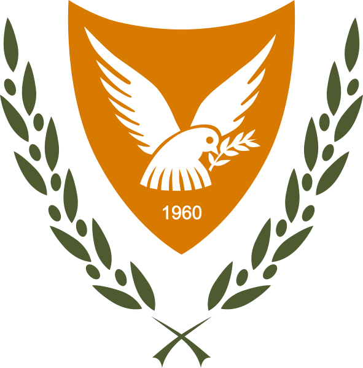

____
Флаг
Флаг Респу́блики Кипр — прямоугольное белое полотнище с силуэтом острова медного цвета (PMS 144C), под которым изображены две скрещенные ветви оливкового дерева.
Медный цвет указывает на богатые залежи меди, найденной на Кипре ещё в 3000 г. до н. э.: даже латинское название меди Cuprum (древн. Aes cuprium, Aes cyprium) произошло от латинского названия острова Кипр — Cyprus (от названия Кипра происходит и название дерева кипарис).
Две ветви оливкового дерева олицетворяют две основных этнических группы населения — греков-киприотов и турок-киприотов.
Флаг был введён в употребление после объявления о независимости от Великобритании, достигнутой в 1960 году.
Флаг Республики Кипр — один из немногих флагов стран мира, где используется изображение силуэта территории страны.

Герб
Герб Республики Кипр представляет собой медно-жёлтый щит, обрамленный оливковыми ветвями. На щите изображён белый голубь, несущий оливковую ветвь — хорошо известный символ мира, а внизу число «1960» — год, когда Кипр получил независимость от Великобритании.

____